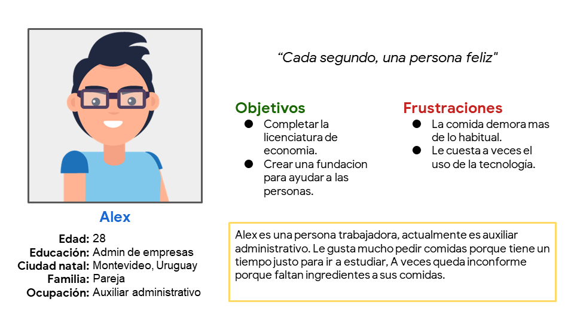
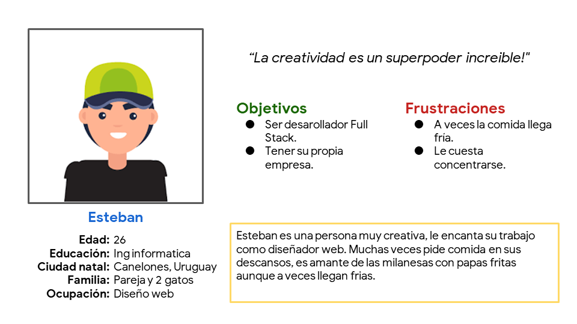

Diseño de una app para un restaurante familiar

Rol y responsabilidades
Este proyecto fue elegido del curso "Diseño de experiencias del usuario UX" de Google en coursera. En estre proyecto trabaje como investigador principal UX y desarrollador. Fui jefe de interfaz de usuario, centrandome en el diseño visual creando prototipos de baja y alta fidelidad y la interaccion.
Publico objetivo: He creado una aplicación para un restaurante familiar para alcanzar a mas clientes y que puedan realizar pedidos sin salir de sus casas. También que puedan enterarse de ofertas y otras novedades que tiene para ofrecer el restaurante. Queremos crear un producto que tenga éxito en el mercado y satisfacer a nuestro cliente y mejorar sus ventas.
Desafio: Diseñar una aplicacion que se puedan realizar pedidos a especialmente para aquellas personas que trabajan mucho y disponen de poco tiempo de descanso para almorzar.
Objetivo:Investigar las dificultades que puedan tener nuestros usuarios a la hora de realizar un pedido y también que sea intuitivo y adaptable para todos los usuarios.
Investigacion
Realicé entrevistas y creé mapas de empatía para entender a los usuarios para quienes diseño, así como sus necesidades. Un grupo de usuarios primario identificado a través de la investigación fueron los adultos trabajadores que no tienen tiempo para cocinar. Este grupo de usuarios confirmó las suposiciones iniciales sobre los clientes del restaurante, pero la investigación también reveló que también habían clientes habituales que les gustaría realizar pedidos para no tener que trasladarse.
Personas entrevistadas
Para esta investigacion se han realizado 5 entrevistas en las cuales Alex y Esteban se destacan.
Alex es un auxiliar administrativo que actualmente esta realizando la licenciatura en economia. Alex tiene poco tiempo entre clase y clase para prepararse su almuerzo por lo que prepara su comida el dia anterior.
Esteban es un diseñador web que vive con su pareja y sus 2 gatos. Esteban pide con frecuencia comida ya que dispone de poco tiempo en su descanso para almorzar pero siempre llegan tarde. Su plato favorito son las Milanesas con papas fritas.
Comenzando el diseño
Esquemas de pagina

Se utilizaron estrellas para marcar los elementos de cada boceto que se usarían en los primeros esquemas de página digitales.
Esquemas de paginas digitales (Prototipo de baja fidelidad)
Estudio de facilidad de uso: Hallasgos
- Se añadio 2 botones uno para añadirlo al carrito y otro para saber mas sobre la comida. Esto beneficia a que si ya eres un cliente recurrente ya sabras que contiene la comida.
Perfeccionando el diseño
Maquetas:
Esquemas de paginas digitales (Prototipo de alta fidelidad)
Accesibilidad
1
Se incorporo una fuente serif sans para que sea mas visibles para personas con poca visibilidad.
2
Se usaron íconos para facilitar la navegación.
3
Se usaron imágenes detalladas de las comidas para ayudar a todos los usuarios a comprender mejor los diseños.
Conclusiones
¿Que aprendi?
Como primer proyecto de investigacion UX, aprendi muchisimas cosas, destaco los mapas de recorrido de usuarios, crear graficos de panorama general y de primer plano, ademas, como realizar un estudio de investigacion correctamente y la importancia de los feedbacks y saber como darlos y recibirlos.
Proximos pasos
1
Realizar unos ajustes con respecto a como se toma la información del usuario para realizar los pedidos.
2
Realizar otra ronda de estudios de facilidad de uso para validar si las dificultades experimentadas por los usuarios se abordaron de manera efectiva.
3
Realizar más investigaciones de usuarios para identificar nuevas necesidades.